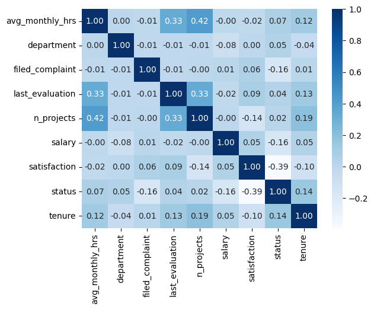
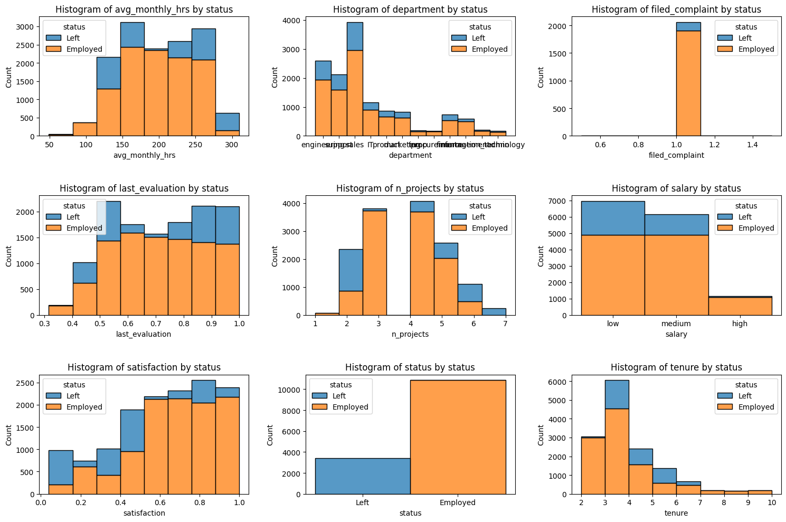
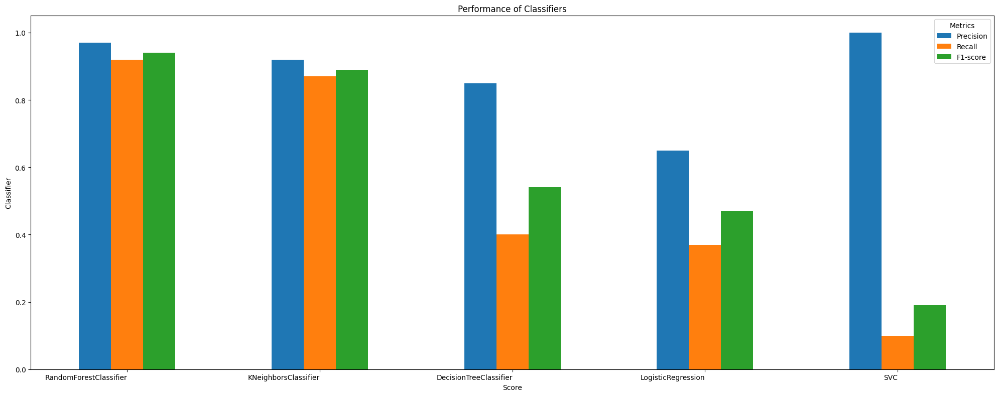

Overview

The goal of this project was to identify employees who are likely to leave, using HR data on about 14,000 employees (satisfaction, tenure, salary, workload, complaints, evaluations and more). I aimed for an unbiased, end-to-end analysis: from cleaning and exploring the data to training and tuning a model.
This was one of my first projects, and much of the time went into machine learning. I chose not to build a dashboard here so that the focus stays on Python and ML.
Results at a Glance
Steps Taken and Reasons
Steps I Took
- Step 1: Conducted exploratory data analysis (EDA)
- Step 2: Preprocessed the data
- Step 3: Trained and compared five baseline models
- Step 4: Visualized variable correlations with a heatmap
- Step 5: Tuned the best model
Why These Steps
- Step 1: To gain initial insights and guide the rest of the analysis
- Step 2: To handle missing values, duplicates and encoding so the data is model-ready
- Step 3: To find which algorithm predicts churn best
- Step 4: To check the relationships between churn and each variable
- Step 5: To catch more of the employees who are about to leave
Model Comparison
Scores below are for the "Left" class on a 20% validation set (2,814 employees).
| Model | Precision | Recall | F1-score |
|---|---|---|---|
| Logistic Regression | 0.64 | 0.36 | 0.46 |
| Decision Tree (depth 2) | 0.85 | 0.40 | 0.54 |
| SVC | 1.00 | 0.10 | 0.19 |
| K-Nearest Neighbors | 0.92 | 0.87 | 0.89 |
| Random Forest | 0.96 | 0.92 | 0.94 |
| Random Forest, threshold 0.4 (final) | 0.95 | 0.92 | 0.94 |
| Random Forest, 5 features only, threshold 0.4 | 0.78 | 0.86 | 0.82 |
Random Forest clearly outperformed the other models, catching 92% of the employees who left with 95% precision and 97% overall accuracy. I lowered the decision threshold from 0.5 to 0.4 so the model leans toward flagging at-risk employees, since missing someone who is about to leave costs HR more than a false alarm. A simpler version using only the five most correlated features still reached an F1-score of 0.82.
Sample Visualizations
EDA: distribution of employees who left

Training and comparing models

Code
Recommendations
The heatmap points to four key factors HR should address:
- Satisfaction: Run regular, anonymous surveys to spot dissatisfaction trends early and encourage honest feedback.
- Career development: Offer training programs, mentoring and a clear career path for employees who want to grow.
- Salary: Introduce performance-based pay such as bonuses, commissions or stock options for employees who exceed expectations.
- Filed complaints:
- Respond promptly: this is the most effective lever. Employees should feel heard and see real action on their issues.
- Analyze the nature of complaints: group them into themes (team conflict, workload, harassment…) to understand root causes.